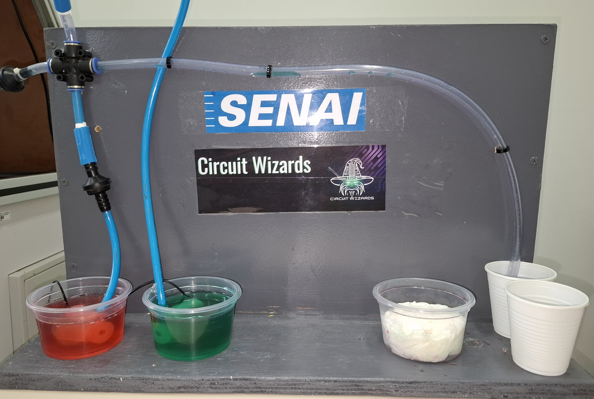
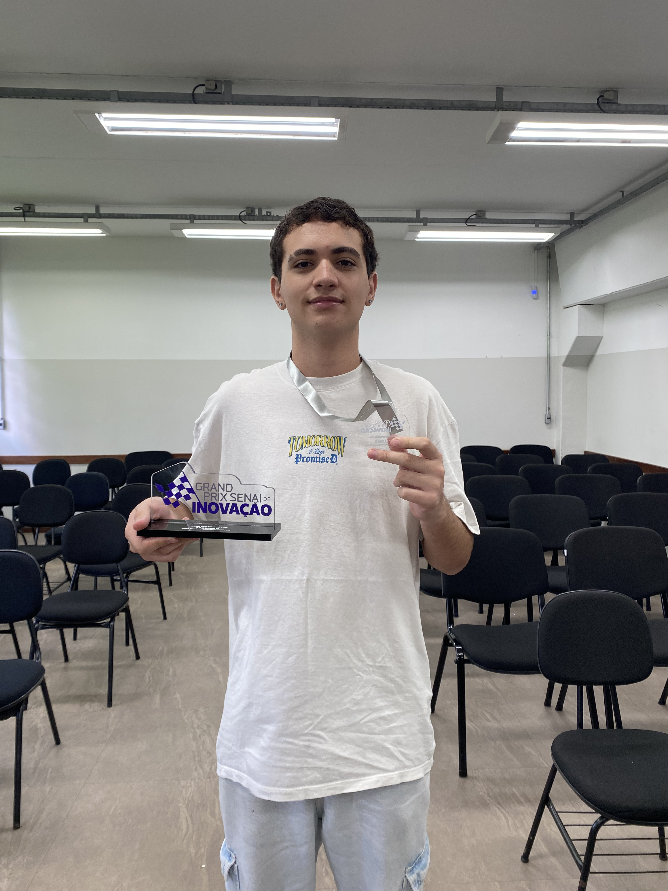
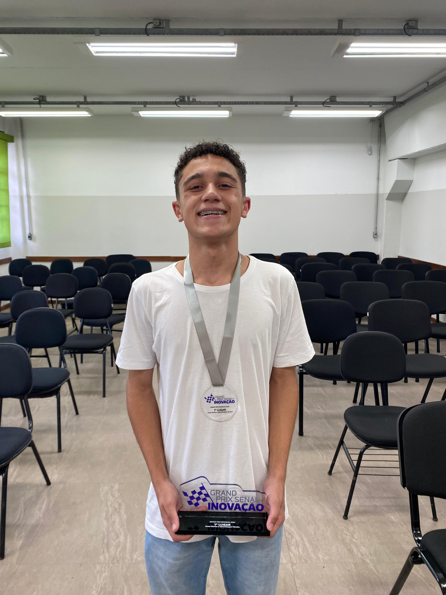
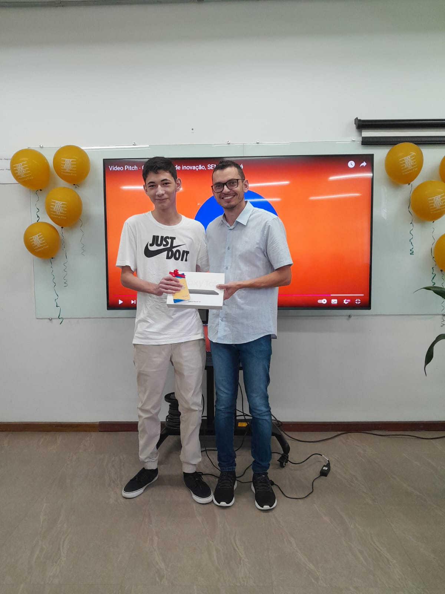
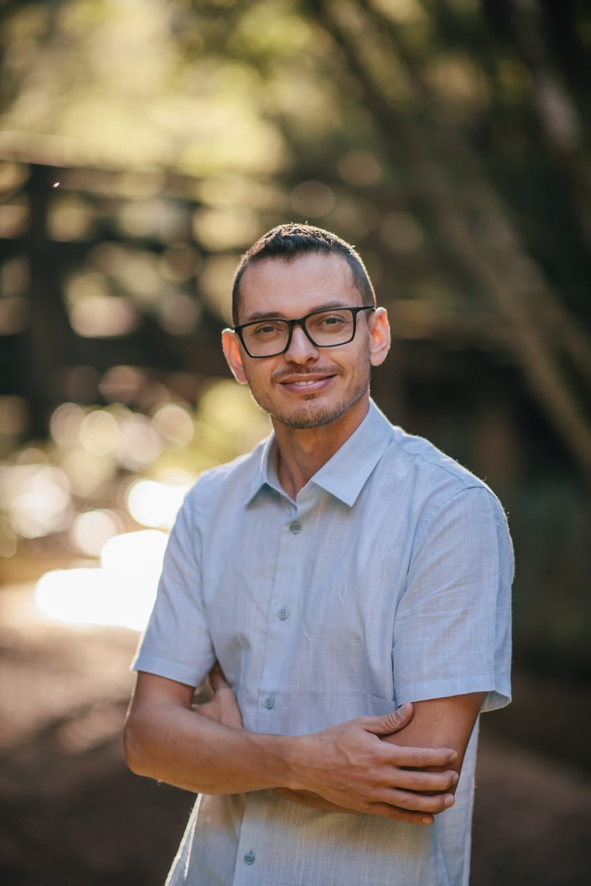

Sobre Nós
Somos a equipe Circuit Wizards, vencedores do Grand Prix SENAI PR 2024. Nossa missão é desenvolver soluções inovadoras e sustentáveis para a indústria.
Acreditamos no poder da inovação para transformar processos industriais e tornar o mundo um lugar mais sustentável. Nossa equipe é composta por indivíduos apaixonados pela tecnologia e pela resolução de problemas complexos.
Nosso objetivo é oferecer soluções práticas e acessíveis que impactem positivamente a sociedade e promovam o desenvolvimento sustentável. Trabalhamos com determinação para superar desafios e criar um legado duradouro.

Grand Prix SENAI PR 2024
O AeroCleaner foi desenvolvido durante o Grand Prix SENAI PR 2024, onde conquistamos o primeiro lugar com nossa abordagem eficiente e sustentável para a limpeza de tubos e mangueiras industriais.
O evento foi uma oportunidade incrível para demonstrarmos nossa criatividade, trabalho em equipe e capacidade de resolver desafios em um ambiente competitivo. Foi um marco para nossa jornada como inovadores.
A experiência no Grand Prix nos proporcionou aprendizado valioso, conexão com outros talentos e a chance de mostrar nosso potencial. Foi um momento inesquecível que impulsionou nossa visão para o futuro.

AeroCleaner
O AeroCleaner é uma solução eficiente e sustentável para a limpeza de tubos e mangueiras industriais, utilizando ar de forma inovadora para garantir resultados excepcionais.
Nosso produto foi projetado para reduzir custos operacionais e impactos ambientais, garantindo máxima eficiência e segurança. Com o AeroCleaner, a indústria pode operar de forma mais inteligente e responsável.
O design compacto e robusto do AeroCleaner facilita sua aplicação em diversos setores industriais. Ele é a solução ideal para empresas que buscam aliar produtividade à sustentabilidade.
 Saiba MaisIntegrantes
-

João Pedro Nabosne - Líder e criador do Projeto
João é o responsável por transformar ideias em conceitos inovadores. Com uma visão única e uma abordagem estratégica, ele guia a equipe no desenvolvimento de soluções criativas, sempre buscando excelência e originalidade. Sua habilidade em coordenar os processos criativos e garantir que cada detalhe esteja alinhado com a visão do projeto faz dele uma peça fundamental no sucesso de cada etapa.
-

Leonardo Pasturchak - Assistente criativo do Projeto
Leonardo é criativo e talentoso, apoia a equipe com ideias inovadoras e soluções práticas. Seu olhar atento e dedicação garantem resultados de alta qualidade em todas as etapas do projeto.
-

Antony Vinícius Leite Moraes - FilmeMaker e Roteirista
Antony é responsável por documentar nossa jornada e criar roteiros envolventes para apresentar o projeto ao público. Sua criatividade é essencial para nossa comunicação.
-

Joésley Sowa - Professor Orientador
Joésley oferece orientação técnica e estratégica para a equipe. Sua experiência e conhecimento são um suporte valioso em cada etapa do projeto.